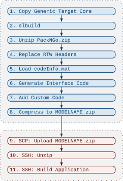

Deployment Overview
A Simulink model is created on the basis of the provided template model. Using the
GT.GenericTarget MATLAB class, the model is then deployed to the
target computer. During code generation, Simulink produces generic C/C++ code that essentially consists of a
class with the methods initialize(), step(), and terminate(); the name
of the generated class is derived from the name of the Simulink model.
In addition to the generated code, the codeInfo.mat file is created during model code
generation. It contains metadata such as sample rates and function names. From this information and the
properties of the GT.GenericTarget object, the Simulink interface
code is generated; the programming interface between the Generic Target Core and this interface class is
always the same. All source files are then transferred to the target via SCP and compiled on the target
computer.

Using the MATLAB Class GT.GenericTarget
For a repeatable deployment process, a MATLAB script or function is recommended. First, a GT.GenericTarget object is created:
target = GT.GenericTarget('username','hostname');
The target can be addressed by its IP address or by a host name.
Afterwards, the properties of the object can be adjusted as needed. The Deploy method then generates the code and transfers the application to the target computer:
target.Deploy('modelname');
Deployment Process
The deployment process consists of two phases: first, the complete source code of the real-time application
is generated on the host; then it is transferred to the target computer and compiled there. The generated zip
archive has the same name as the model; it is referred to as MODELNAME.zip in the steps below.

1. Copy Generic Target Core
A temporary code generation folder is created that will contain the complete application. The Generic Target Core is copied into this folder first, and the Makefile is generated according to the properties of the GT.GenericTarget object.
2. slbuild
Generic C/C++ code is generated from the Simulink model. The model must be configured for the pack-and-go
functionality of MATLAB/Simulink. The generated code and all necessary Simulink libraries are packed into a
compressed zip archive (PackNGo.zip).
3. Unzip PackNGo.zip
The archive is unpacked into the temporary code generation folder.
4. Replace RTW Headers
The header files rtw_windows.h and rtw_linux.h define how semaphores and mutexes
are used. They are replaced so that the generated code uses POSIX semaphores and mutexes. The corresponding
source files rtw_windows.c and rtw_linux.c are deleted.
5. Load codeInfo.mat
The codeInfo.mat file created during the slbuild step is loaded. It contains
metadata about the generated code, such as sample rates and function names.
6. Generate Interface Code
Based on the information in the codeInfo.mat file, the Simulink interface class is generated.
The properties of the GT.GenericTarget object are integrated into
the interface class as well. A template for the interface class is located in the core/ directory
of the toolbox; placeholders marked with $ characters are replaced by the corresponding values
during code generation.
7. Add Custom Code
Additional code specified via the customCode property is added to the temporary code generation folder. All files and directories are copied as-is, without checking their content.
8. Compress to MODELNAME.zip
The temporary code generation folder now contains the complete application source code. It is packed into the
zip archive MODELNAME.zip, which is ready to be transferred to the target.
9. SCP: Upload MODELNAME.zip
The archive MODELNAME.zip is uploaded to the user's home directory on the target computer.
10. SSH: Unzip
The existing code/ and build/ directories of the
Generic Target application are deleted first, so that the new
deployment starts from a clean state. The uploaded archive is then unpacked.
11. SSH: Build Application
The make tool compiles the software on the target, using 8 parallel jobs so that up to 8 source
files are compiled concurrently.